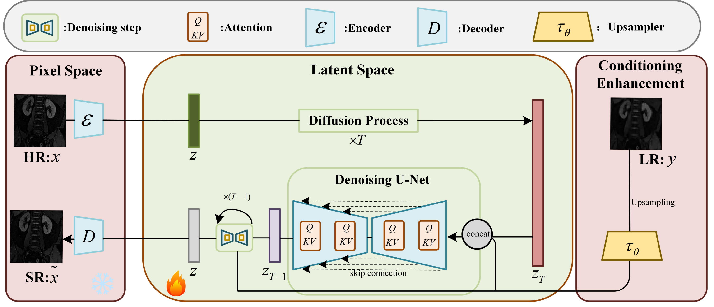

Biography
Junfeng Jiang is an Associate Professor at the College of Artificial Intelligence and Automation, Hohai University. He serves as the Deputy Director of the Institute of Human–Environment Intelligent Interaction and Systems.
His research focuses on AI-driven medical treatment planning and execution, orthopedic surgical robotics, medical image analysis, and 3D computer graphics. His work has been published in leading venues including ICCV, MICCAI, EuroGraphics, Computer-Aided Design, and Computers & Industry.
Research Areas
- AI Medical Treatment Planning and Execution
- Orthopedic Surgical Robotics
- Medical Image Analysis
- 3D Computer Graphics
- Fracture Reconstruction and Reduction
2026
Selected Publications

Shen A, Jiang J*, Tang Y, Chen Z, Nong L, Chen Q, Wang F, Wuse X
Semantic Edge-Guided Single-View 2D/3D Registration for Vertebrae in X-rays
Semantic Edge-Guided Single-View 2D/3D Registration for Vertebrae in X-rays
Abstract
A single-view 2D/3D vertebra registration method guided by semantic edge information, designed to improve robustness and geometric consistency in X-ray based spinal alignment tasks.
2025

Shen A, Fu X, Jiang J*, et al.
RadGS-Reg: Registering Spine CT with Biplanar X-Rays via Joint 3D Radiative Gaussians Reconstruction and 3D/3D Registration
RadGS-Reg: Registering Spine CT with Biplanar X-Rays via Joint 3D Radiative Gaussians Reconstruction and 3D/3D Registration
Best Paper Nomination
Young Scientist Award Nomination
Abstract
A framework for spine CT and biplanar X-ray registration that combines 3D radiative Gaussian reconstruction with 3D/3D registration to improve alignment accuracy in image-guided spinal intervention scenarios.

Lu J, Liang Y, Han H, Jiang J*, et al.
A Survey on Computational Solutions for Reconstructing Complete Objects by Reassembling Their Fractured Parts
A Survey on Computational Solutions for Reconstructing Complete Objects by Reassembling Their Fractured Parts
Abstract
A survey of computational methods for reconstructing complete objects from fractured parts, covering geometric matching, learning-based assembly, optimization strategies, datasets, and evaluation protocols.

Wang Z, Jiang J*, et al.
Spinal Magnetic Resonance Imaging Super-Resolution Based on Improved Latent Diffusion Models
Spinal Magnetic Resonance Imaging Super-Resolution Based on Improved Latent Diffusion Models
Abstract
A spinal MRI super-resolution method based on improved latent diffusion models, designed to enhance image quality and anatomical detail for downstream analysis and clinical applications.
2024

Jiang J*, Shuai L, Zeng Q
ABLSpineLevelCheck: Localization of Vertebral Levels on Fluoroscopy via Semi-supervised Abductive Learning
ABLSpineLevelCheck: Localization of Vertebral Levels on Fluoroscopy via Semi-supervised Abductive Learning
Abstract
A semi-supervised abductive learning framework for localizing vertebral levels on fluoroscopic images, targeting more reliable intraoperative level identification in spinal procedures.
2023

Deng Z, Jiang J*, Chen Z, et al.
TAssembly: Data-driven Fractured Object Assembly
TAssembly: Data-driven Fractured Object Assembly
Abstract
A data-driven framework for fractured object assembly using a linear template model to guide fragment alignment and reconstruction.

Deng Z, Jiang J*, Huang R, et al.
Synergistically Segmenting and Reducing Fracture Bones via Whole-to-Whole Deep Dense Matching
Synergistically Segmenting and Reducing Fracture Bones via Whole-to-Whole Deep Dense Matching
Abstract
A whole-to-whole deep dense matching approach that jointly performs fracture bone segmentation and reduction to support intelligent orthopedic reconstruction.

Wang F, Jiang J*, Deng Z, et al.
A Deep-Learning Approach for Locating the Intramedullary Nail's Holes Based on 2D Calibrated Fluoroscopic Images
A Deep-Learning Approach for Locating the Intramedullary Nail's Holes Based on 2D Calibrated Fluoroscopic Images
Abstract
A deep-learning method for localizing intramedullary nail holes from calibrated fluoroscopic images, aiming to improve efficiency and accuracy in orthopedic fixation procedures.
2021

Huang Q, Huang X, Sun B, Jiang J, et al.
ARAPReg: An As-Rigid-As-Possible Regularization Loss for Learning Deformable Shape Generators
ARAPReg: An As-Rigid-As-Possible Regularization Loss for Learning Deformable Shape Generators
Abstract
An as-rigid-as-possible regularization loss for learning deformable shape generators, encouraging plausible deformation behavior while preserving local geometric structure.
* Corresponding author
Research Projects & Grants
Ongoing Projects
Intelligent Dual-Channel Spinal Endoscopic Surgical Robot
3,000,000 RMB · PI
Ongoing
Mixed-Reality Navigation System for Trauma Orthopedics
2,000,000 RMB · Project Leader
Ongoing
2D/3D Registration Algorithms for Image-Guided Spinal Surgical Robots
350,000 RMB · PI
Ongoing
3D Surgical Planning and Simulation for Fracture Bridging Fixation
150,000 RMB · PI
Ongoing
Spinal Vertebra Sub-component and Soft Tissue Segmentation Algorithms
100,000 RMB · PI
Ongoing
Completed Projects
Efficient Processing of 3D Models for Fracture Repair Surgical Planning
610,000 RMB · Participant
Computer-Assisted Preoperative Planning for Fracture Treatment
100,000 RMB · PI
AR-based Spatial Localization for Distal Femoral Nail Locking Holes
PI
Intelligent 3D Reconstruction and Measurement for Knee Replacement Surgery
PI
Students & Alumni
- PhD: Ziyue Deng — Huawei 2012 Laboratory
- PhD: Ao Shen — Postdoctoral Researcher at Shanghai Jiao Tong University
- Master graduates employed at NIO, ByteDance, Meituan, banks, and state-owned enterprises
Teaching
- Machine Learning — Fall Semester (Annual)
- AI Medical Image Analysis and Applications — Spring Semester (Annual)
Awards & Honors
- MICCAI 2025 Best Paper Nomination
- MICCAI 2025 Young Scientist Award Nomination
- Jiangsu Medical Science Award, 2023
- Students advised by the group have received Outstanding Master’s Thesis honors in Jiangsu Province